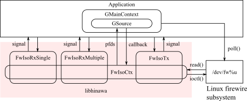

The library produces some objects as abstraction to operate system resources in Linux FireWire subsystem.
The library supports operations to 1394 OHCI controller for isochronous communication on IEEE 1394 bus. All operations are associated with GSource retrieved from each object, therefore applications should be programmed with GMainContext.

The library supports gobject introspection, thus this library is available with gobject introspection bindings of each language such as Python, Ruby and so on. When using this mechanism, please refer to documents in each language implementation.